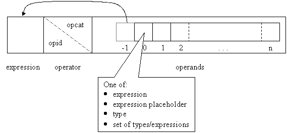

The analyzer in the Teaching Machine plays several roles. It is most like a traditional compiler front-end, except that it only supports but does not implement lexical and syntactic analysis (these are implemented by the Parser package). It does implement semantic analysis and the construction of an AST (abstract syntax tree) “intermediate code” representation of the program.
n the C++ implementation, “compilation” occurs in a single phase. The parser directs semantic analysis and code generation on the fly as it is building the parse tree. Most of the compile-time representation built by the analyzer is meant to be disposable between translation units (source files).
An easy (and less precise) way to visualize the analyzer’s role in the grand scheme of things is as the bridge between the parser and the intermediate/runtime representation of the program.
Table 1: analyzer responsibilities by compilation phase (front-end)
| phase | role |
| preprocessing | none at present |
| lexical analysis | provides supporting data structures |
| syntactic analysis | provides compile-time symbol table, semantic lookahead, convenience methods |
| semantic analysis | performs semantic analysis |
| intermediate code generation | builds intermediate code representation1 |
Table 2: analyzer relationships to other Clc/Cpp packages
| package | relationship |
Preprocessor |
none at present |
Parser |
supports parser activities through data structures and convenience methods. Responds to parser calls by performing semantic analysis and intermediate code generation. |
Ast |
the stuff of intermediate code generation. The analyzer constructs AST expressions, statements and types according to the language rules. |
RT_Sym_Tab |
places entries on the “runtime symbol table”, which is an abstraction of the compile time symbol table with some additional runtime functional responsibility. |
Datum |
occasionally constructs Datums (for certain literals and initialization expressions), but generally leaves this to Ast |
This document tries to accomplish several things
Objectives 1 through 3 are addressed throughout this document, in a hierarchical, design-oriented fashion. The analyzer is broken into several functional areas. Each area is then presented individually, analysed, and discussed in terms of phase 2 and java where appropriate. Analyzer examples are provided in the appendices
This document does not go into specific detail about individual classes, methods, etc. Instead, the javadoc for the Analysis packages should be used as a supplementary document and the authoritative implementation reference. It is a good idea to have the javadoc handy when reading this document
The “high-level interface” interaction diagram is a useful complement to the related topics in this document. It shows the interactions at the top level for a simple declaration followed by an assignment statement in a main routine.
There is a flash animation to supplement and illustrate the example provided in the appendix. It provides a visual description of a typical expression building procedure.
The analyzer is implemented across two packages; Clc.Analysis,
which contains language-neutral functionality and base classes, and Cpp.Analysis,
which contains language-specific functionality and implementations of Clc
base classes.
Where potential for reuse was clear, there is a fairly good split between Clc
and Cpp. When the level and nature of applicability to other languages
was less clear, the design and implementation errs on the side of being C++-specific.
Without a precise knowledge of the analysis rules for each language, the other
option would have been to make “informed guesses” throughout the design. In
the end, the additional work required to do this well was prohibitive given
the size, complexity, and very language-specific nature of the C++ language
specification. This does not mean that reuse was abandoned as a design goal.
The data structures and interfaces defined for the C++ language implementation
should prove abstract enough in many circumstances to permit straightforward
cross implementations for Java.
Because of the language-specific nature of several components key to the overall design, it made less sense to break the document according to Clc and Cpp packages. Instead, it is hoped that the document serves to introduce reusable concepts to the developer of a java version. Design refactoring is also strongly encouraged where possible when implementing java language support, and is part of the java-specific discussion.
Managers. constitute the high level interfaces to analysis functionality., fulfilling the specific requirements of the Parser and the runtime representation.
Expression Building. Considers the raw materials of an expression and the context in which it is encountered, and applies rules in sequence to generate the runtime representation of the expression.
Declarations and Code Generation. Handles all kinds of declaration. Compile-time and runtime representations of declarations must be classified and built. Class declarations may require the generation of implicitly defined special member functions, and initialization code is often required for declarations and function definitions.
Symbol Table. The compile-time symbol table stores declarations, maintains a representation of various scopes, and performs id resolution (retrieving matching declarations).
Type Analysis. This includes user-defined and built-in type conversion logic, conversion sequences, extracting types from specifier sequences, and categorizing types.
Overload Resolution. Overload resolution uses type analysis to locate the best match among a set of candidate functions.
Figure 2: high level component dependencies
The highest level interfaces to analysis functionality are the “managers”.
These are responsible for handling broad categories of messages coming from
the Parser. There are three main categories of message: expression requests,
declaration requests, and notification of scope entry/exit. Conceptually, a
distinct manager is responsible for each category. The Parser_context
façade class exposes the interfaces of each manager to the Parser2
.
Managers do not implement a common interface, nor do they derive from a common base class. They all utilize the Analysis subsystem to meet the specific needs of the Parser, but they do so in very different ways. In the C++ implementation, a single manager is responsible for the declaration and scope categories, because they share internal data.
Table 3: manager implementation in C++
| manager | description |
Cpp_Declaration_manager |
handles declaration requests and scope changes |
Cpp_Expression_manager |
handles expression requests |
Cpp_Expression_managerThe expression manager constitutes a relatively consistent interface into the expression building logic. Distinct methods fulfill requests for particular classes of expression; most follow the same general pattern:
Expression_ptr given the method arguments and particular
method calledExpressionBuilder, which then applies
expression building rulesExpression_ptr)Cpp_Declaration_managerThe declaration manager is something else entirely. Subject to a sudden, dramatic, and late growth spurt, it provides a significant amount of its functionality directly. Much of this should be encapsulated into new classes. In addition to being the declaration and scope “manager”, it implements much of the “declaration building and code generation” functionality outlined below.
The high-level interface for a Java analyzer will be impacted by the need for
multiple passes. The first pass will build much of the compile-time representation
of the program, and the second will traverse and complete this representation.
The flow of control will likely be very similar however, i.e. the analyzer will
respond to requests from the parser. The nature of these requests should also
be similar. It is conceivable that managers exist in the Java language implementation
for expressions, declarations, and scopes, with the most notable differences
in scope management. Very lean Expression_manager and Declaration_manager
base classes exist in Clc.Analysis.
As stated previously, the declaration manager handles declaration requests and scope changes. This includes:
The declaration manager relies on four Analysis package classes when doing its work.
These are the high-level interface to the compile-time symbol table
(Cpp_CTSymbol_table) the initialization expression builder
(Eb_Initialization) the expression manager (Cpp_Expression_manager) and TypeExtractor.
Cpp_CTSymbol_table is used in many ways by the declaration manager:
Eb_initialization is used whenever an initialization expression
needs to be built for a declaration statement. TypeExtractor further
categorizes a type for a declaration’s compile-time representation.
At present, the declaration manager is itself responsible for “implicit code
generation”. That is, it builds any code that is generated automatically as
a result of a variable declaration, class definition, or function definition.
Cpp_Expression_manager is used during code generation to obtain
Expression_nodes (such as initialization expressions), but Statement_nodes
are generated directly. Code generation is required in the following circumstances:
NULL). not yet implementedIn addition to generating Expression_nodes where appropriate,
and a variety of Statement_nodes during code generation (outlined
above), the declaration manager also builds Statement_nodes for
declarations (StatDecl) and initializations (StatDo).
Statement nodes are linked together, and generally the last-generated node’s
“next” link is returned to the Parser.
Finally, the declaration manager adds entries to the runtime symbol table where required:
The declaration manager’s relation to the “runtime” portion of the teaching
machine is more varied and direct, therefore, than that of the expression manager,
which simply builds AST Expression_nodes and returns them to the
Parser.
There will be a similar need for code generation, initialization and declaration
building, but the range of scenarios will decrease in each case. Declaration
building may require two phases, one for each pass. Roughly, in the first pass
a Declaration can be added to the symbol table, and in the second
pass the Declaration’s type can be established. The means of building
the runtime representation will likely stay the same.
The code generation portion of the declaration management could be factored out of the declaration manager itself. A more generic code generation interface could potentially facilitate implementation of library classes and functions, but this kind of “internal generation” should be avoided if a large portion of the library is to be supported. Another approach would be to process raw source implementations of those portions of the library that are utilized in a user’s code. How this code is identified, accessed, processed and integrated is outside the scope of this document.
Multiple translation units may cause a change in the way file scopes are entered and exited, and how extern declarations are handled.
Expression building means (in this document) building the AST representation of an expression encountered by the Parser. This covers the full range of expressions in C++, as defined primarily in clause 5 of the C++ ISO spec.
Expression Building is a core analysis process of the front end. Where the syntactical analyzer (the Parser) identifies sequences of tokens as belonging to a particular syntactic category, the Expression Building logic performs semantic analysis; determining what is meant by the syntax, and generating an internal, executable representation of this. This “internal representation” consists primarily of a tree of AST nodes.
Broadly, the factors impacting expression building are:
The general design idea is to define generic, atomic rules, and combine them in various ways to handle each expression building circumstance. Expression building rules have a potential for reuse across different kinds of expression, different syntax with the same meaning, and (less frequently) across language implementations.
public void apply (Expression_ptr exp) ;
Individual rules extend the CodeGenRule abstract base class, which
specifies a single abstract method (apply). In the apply method, the rule will
use other parts of the analyzer and possibly other Clc or Cpp packages, usually
resulting either in the generation of one or more AST expression nodes, or the
test of some condition. In this way, criteria leading up to a rule’s application
in a particular circumstance need not be validated by the rule itself; much
or all of this may be encapsulated in separate rules (conditions and/or assertions),
which are then combined in an appropriate manner with this rule (see below).
The single parameter to the apply method is an Expression_ptr,
which contains a progressive representation of the AST expression tree being
built as a rule sequence is traversed; the Expression_ptr is described
in detail below.
A rule is a single instance of a CodeGenRule.
A ruleset is an ordered combination of rules.
We use the term rule sequence to distinguish a ruleset comprised of all rules required to generate a particular expression given a particular category of inputs.
There are several different ways that rules can be combined together to form
a ruleset. These have themselves been abstracted to form a family of classes
deriving from the base class CGR_node. Nodes are combined to form
tree-like structures, which are traversed (generally post-order) against the
“raw materials” of an expression. When the appropriate nodes in the tree have
been applied, the AST representation of the expression will have been built
(or a relevant error message provided). .
Table 4 briefly describes the various types of CGR_nodes.
Table 4: CGR_nodes, "structural" rules
| name | description | args required at construction |
CGR_sequential _node |
node with a single immediate child, calls child.apply prior to executing its own rule | CodeGenRule to associate with the node, child rule |
CGR_operand _node |
node with a single immediate child, which is applied against each of the operand values in sequence, prior to executing its own rule | CodeGenRule to associate with the node, child rule. |
CGR_operand _branch_node |
node with one or more immediate children. Child[0] is applied against Operand[0], Child[1] against Operand[1], and so on until there are no more operands. An error is generated if there are not enough child rule nodes for operands, but not vice versa. After applying child nodes, its own rule is executed. | CodeGenRule to associate with the node, list of child rules |
CGR_conditional _node |
node implementing conditional execution of rulesets. After applying the (optional) “precursor” child, a test is applied, determining which of the other two children to apply (named “onTrue” and “onFalse”). Any or all children can be null, meaning the conditional node will do nothing in place of applying the child node. | CGR_test (its applies method is used), precursor, onTrue,
and onFalse rules. |
In addition to the CGR_nodes, there are CodeGenRules
that perform other mechanical or generic operations. These are listed in Table
5.
Table 5: generic rules
| rule | description | constructor args |
CGR_error |
Generates an error message. | The error message to display. |
CGR_none |
Does nothing. | -- |
CGR_test |
Base class. Performs a test, indicating pass or fail. Used
by conditional nodes and assertions. Derived classes must implement the
abstract applies method 5
. |
0, 1, or 2 operand indexes, specifying which operand(s) to apply the test against, if applicable. |
CGR_assertion |
Applies a test, generating an error message if it fails. | The test to apply, and an optional supplementary message to display if the test fails. |
CGR_unimplemented |
Generates a “sorry not implemented” apology for a particular rule. | A description of the unimplemented rule (usually the rule key). |
RuleProxy |
Delays the construction of a ruleset until first use. This is useful when a ruleset is fairly large, and is used only in non-typical circumstances6 . | The rule key, and the rulebase to add the generated ruleset to. |
The “structural” nodes have some design weirdness that deserves explanation.
Originally a “CGR_terminal_node” structural node completed the set; this CGR_node
contained a single rule that it would execute. This is why structural nodes
distinguish their “own rule”; all children were CGR_nodes, their
“own rule” was an internal attribute of the node. A simpler approach that saved
time, space and typing was to consider CGR_nodes as types of CodeGenRule,
and have other “non-structural” CodeGenRules essentially be their
own “terminal node”.
Another artifact from the original design is that the order of execution might seem backwards. The way in which a set of rules is specified reflects its tree structure, and a post-order traversal means you tend to interpret the rule sequence from right to left, up to the top rule7 .
For example, in:
CodeGenRule rs_std_assign =
new CGR_sequential_node
(new CGR_assignment (),
new CGR_operand_branch_node
(new CGR_arithmetic_conversion (…),
new CodeGenRule []
{new CGR_assertion
(new CGR_modifiable_lvalue_test ()),
new CGR_fetch ()}
)
);
the (non-structural) rules are applied in this order:
CGR_assertion, which uses the “modifiable lvalue test”CGR_fetchCGR_arithmetic_conversionCGR_assignment
This ordering makes sense (to me, after writing and using it) if viewed as the culmination of rule application from low-level, operand-specific rules up towards the final generation of the desired AST expression node. It also tends to mimic the complete AST representation being built. For example:
Op_assign (Exp_id (),
Op_arithmetic_conversion (Exp_fetch (Exp_id())))
is a typical AST expression node structure built by the rule sequence above.
Rules are normally constructed at startup, and put into a RuleBase,
which is accessed as needed when building rule sequences. The intention is to
have one RuleBase in the system per language implementation, but
this is not enforced, in case there is a good reason to have more than one in
a particular language implementation. The RuleBase is a table that
associates CodeGenRules with descriptive strings. Each string is
defined by the class responsible for building the related rule. In addition
to functioning as keys, the strings can serve to identify rules in error messages
and debugging. Because CGR_nodes are CodeGenRules,
rulesets can be placed in the RuleBase.
The responsibility for building rules and rulesets is shared across a special
class of CodeGenRule called ExpressionBuilder. ExpressionBuilders
are high-level rules, serving as starting points for different classes of expression8
. The ExpressionBuilders for C++ are defined primarily along lines
of syntax (binary operation, postfix expression, primary expression, etc.),
but this categorization is somewhat arbitrary; it may make more sense to group
according to different criteria in another language implementation. Because
the meaning of an expression and the rules applied in building it are not cleanly
distinguished along lines of syntax, expression builders must share common rules
and rulesets. While it makes sense for a particular ExpressionBuilder
to build rulesets that only it will use, rulesets shared across ExpressionBuilders
are built once by a common base class and stored in the RuleBase.
Table 6: Expression Builders (C++)
| builder | description |
Eb_Operator |
unary and binary operator expressions, plus the ternary conditional operator, and subscripting. |
Eb_Initialization |
initialization expressions, covering zero, default, copy, direct, aggregate and no initialization. |
Eb_Primary |
this, parentheses, id expressions (literals are handled by Literals) |
Eb_Unary |
sizeof, new, delete, prefix increment/decrement |
Eb_Postfix |
function calls, member access, typeid, postfix increment/decrement |
Eb_Cast |
const, static, reinterpret and dynamic casts in all notations |
Literals |
integral, floating, character, boolean and string literals |
Once the rulesets have been built, ExpressionBuilders are responsible
for turning an expression building request (coming from the Parser)
into the application of a specific rule sequence. For example, a request to
build a binary arithmetic expression may evaluate to the construction of an
overloaded operator method call.
To accomplish this, ExpressionBuilders often maintain tables of
rule sequences, called OperandTables, mapped to the various possible
“raw materials” (passed as arguments). The particular organization and manner
of use of these tables will depend on the format of the expressions supported
by the class, but ordinarily follow a similar pattern.
For example, the rules supporting unary operator expressions are categorized
first by operator; searching for an operator returns an OperandTable
(keyed by the operand’s Type_node class). Applying our operand
returns a rule sequence appropriate for the particular operator-operand combination.
In this way many type categorization rules are embedded in the table structure.
Operands will match the first key for which their type is a direct or derived
instance.
Figure 5: use of OperandTable
In order to understand how expression building works, we need to take a close
look at the Expression_ptr. This is the data structure that embodies
the expression as it is being built; it is passed between rules as a rule sequence
is applied.
The expression pointer first contains the “raw materials” of an expression,
i.e. an operator (or function id) and any operands (or arguments). The operands
are usually AST Expression_nodes that have been built prior to
this point, but may be “expression placeholders” (fake AST expression nodes
that act as surrogates, containing preliminary information until the actual
node can be built), Type_nodes (in explicit casts, for example),
or Node_lists9 . This variety
in operand type is necessary to support a wide range of expression building
rules with a single interface.
The operator or function id is represented by a Scoped_name called
opid. This is the operator/fnid that will be displayed in the expression
window as the expression is being evaluated by the TM. Often, this is also sufficient
to identify the category of operation to be performed. In some circumstances,
however, there are finer shades of meaning introduced by context, that can’t
be distinguished by looking at the opid and operands alone. In
other circumstances there may be several possible images for a single operation
category. In these cases an additional identifier called opcat
will uniquely identify the category of operation to be built. Rules look at
opcat when they need to analyze an operation category, but use
opid when specifying the visible representation of the operator/function.
The opid value is also the opcat unless an opcat
value is explicitly provided.
When a rule sequence is successfully applied, the expression pointer contains
the resulting AST representation of the expression, accessible via Expression_ptr.get
(). This will contain AST representations of any additional operations
that need to be performed, such as conversions and fetches.

Figure 6: the expression pointer
A Flash animation is available, which illustrates the effect of applying a
rule sequence against an Expression_ptr.
reasons for the “rule” approach
The overall design goal is to establish a high level of rule and structural
reuse both within C++ and across languages, while avoiding a proliferation of
rules. A couple of basic guidelines have been followed when defining CodeGenRules.
Following these guidelines will help maintain consistency under a relatively
fluid pattern:
CodeGenRule
might exist for the generation of binary arithmetic expressions, taking an
indication of the specific operator (or class of operator) it is responsible
for as a constructor argument. In this section, we look at an example of the analysis process involved in defining a particular expression builder; the same general approach has been followed for most expression builders in the C++ implementation. Note that the terminology in the analysis example is not precise.
--- begin example
We are concerned here with generating an expression given two operands (themselves expressions) and an operator (a built-in, possibly overloaded id). The procedure followed to build the resulting expression is more or less the same across operations:
During this procedure, there are several interrelated factors to consider when determining the meaning of a binary expression:
Categories of binary operators in C++:
comma, assignment, logical, bitwise, equality, relational, shift, additive,
multiplicative, pointer-to-member.
General rule sequence identification procedure:
Summary: type evaluation is represented in the table structure – these lead to rule sequences that apply to the pair of operand types.
The rule sequences given where either or both operands are of a user-defined type will include appropriate rules concerning overloading. Where type evaluation yields no result, and either or both operands are of a user-defined type, similar rules are applied concerning overloading.
--- end example
After a similar analysis is made for the category of expression you are concerned with, the overall structure of the ExpressionBuilder should be clearer. In the C++ implementation, most expression builders use the same rule sequence location procedure (using OperandTables). When a particular kind of expression doesn’t lend itself well to this procedure, an interface is provided which directly accesses the expression’s rule sequence. An example in C++ is the id expression.
Figure 7: expression building class diagram
The expression building design should transfer well to a Java implementation.
A java implementation would categorize expressions to be handled and define
a corresponding set of ExpressionBuilders; as stated previously
the categorization will be language specific; but given the similarity of Java
and C++ expressions at the syntactical level, this may turn out to be very similar
to the C++ categorization. There will also likely be a JavaExpressionBuilder
base class, concerned with building common rulesets.
A compile-time symbol table provides a mapping from names as presented to a parser to their related declarations. By knowing the type of entity being referred to, a compiler or interpreter is able to perform syntactical and semantic analysis, and ultimately generate the desired representation or actions.
In this document, symbol table refers to the data structures used to express the mapping from names to declarations, plus the logic required to access and manipulate it.
The first version of C++ support in the Teaching Machine was for a subset of the language roughly equivalent to C. Support for more language features, including classes and overloading, requires a more robust knowledge/handling of scope rules and name resolution. In particular, the first parser implementation did not persist declarations beyond their enclosing scope, which is required once classes are introduced.
In addition, the Teaching Machine is designed to support multiple languages, and Java support is scheduled for implementation. The “Common Language Classes” represent a design initiative to reuse code when generating an AST representation. While not an explicit requirement for this design, this kind of reuse is kept in mind.
In a procedural, statically-scoped, block-structured programming language, a symbol table can be implemented as a straightforward stack of scopes. Once a block is exited, the corresponding scope is popped from the stack and discarded. Supporting classes and namespaces introduces the need to maintain symbol table information beyond the block in which something is declared. When a method of class X is defined outside the outer scope of the class, for example, the corresponding scope for class X must be referred to when resolving the names used inside the method10 .
Inheritance and overloading make the scoping rules for a class more complex than a map of simple names to objects. Name resolution must resolve ambiguity by looking at the full ‘scoped name’ as per the rules of the language. Additionally, the scope model for a class may be structured hierarchically in correspondence with inheritance relationships.
The finer points of scopes in C++, including “point of declaration” and “declaration hiding”, will further direct the name resolution logic. The complete scope and lookup rules for C++ are described in the ISO standard, and particularly sections 3.3 and 3.4.
Id resolution in C++ follows two distinct phases, in order:
Once these have completed, access rules are typically enforced. If the matching declaration is accessible in the current context, type checking is performed to ensure that the id is being used legally.
The symbol table design is concerned primarily with supporting the first phase of id resolution. Aspects of this must be available for use in the subsequent phases also, so it is important to consider the entire resolution process in the design.
We might like to honour access modifiers (private, protected, public, and friend) or types when resolving name ambiguity in a multiple inheritance context. For example, an unqualified reference to an attribute y that is declared in two or more parent classes could be resolved where only one of those declarations is public or protected. However, in C++ checking for ambiguity occurs before access control and type checking (ARM 10.1.1).
Ultimately, access modifiers should be ignored during scope resolution, provided the appropriate declaration hiding rules are followed (see below).
At first blush, it seems we can resolve overloading ambiguities up front and
hash to a single value every time, by flattening (‘munging’) method signatures
such that (for example) methods z(int) and z(char)
would have keys zint and zchar respectively11
. However, when determining the method signature that is the ‘best fit’ for
a given call, we often need to look at the whole set of candidates (or at least
those with the same number of arguments). For example, implicit type conversion
might take place to convert a function call argument to the function parameter
type – hashing to munged function signatures is out in this case. Name lookups
for overloaded function names should instead return the set of matches, to be
further analyzed until the best match is found or an error is flagged12
.
The rules for declaration hiding impact id resolution; we always need to know which declaration(s) is/are in scope when performing a lookup. For example, overloading from different levels of an inheritance hierarchy is not permitted in C++, but instead is an instance of hiding.
One finer point of declaration hiding is exhibited where there are multiple
declarations using the same name in the same scope (say struct x
followed by int x). The rule here is that struct x
must be referred to using its expanded name (struct x). This is
just one example of the impact of context in id resolution.
At any given point during symbol table generation or name resolution, the current scope must be known. This means there should be communication between the Parser and the symbol table when scopes are entered/exited13 In addition, when a name is passed in (when parsing a declaration or id expression), the symbol table requires the name exactly as encountered in the code.
Other contextual information may be required in certain cases. This includes an indication of dot and dereference operators, casts, and arguments (where the name refers to a function). Information about the current statement may also be required (e.g. is this id encountered in a declaration statement – lookup rules are different in this context).
Namespace support is not present in the first phase of the new C++ language implementation. It needed to be considered in the overall design of the symbol table, however, as namespaces constitute a set of scoping/name resolution rules in themselves and in relation to other scopes. Indeed, from the perspective of id resolution, classes and namespaces are closely interrelated.
Some details concerning the relationship between namespaces and classes:
Type definitions with external linkage must be kept between translation units so that subsequent declarations will map to the same Type node. Symbol table lookups on ‘extern’ declarations may assist in locating the actual type definition, or detecting multiple definitions. These ‘held over’ definitions are not added to a translation unit’s scope until they are explicitly referred to via an extern declaration.
The symbol table design revolves largely around the use and maintenance of an abstract representation of the scopes and declarations in a translation unit.
A scope contains declarations, may enclose one or more scopes, and is
‘physically’ enclosed by a single scope (or no scope in the case of the global
scope). A scope may have additional ‘enclosed by’ or ‘uses’ relationships with
other scopes, as with class inheritance. Finally, a scope may itself be related
to a Declaration; this is the case with functions, classes and
namespaces in C++.
The representation of scope is built as new scopes are entered by the Parser.
The resulting data structure representing scope for the entire translation unit
is a directed, acyclic graph, with a single origin (representing the global
scope). The nodes (Scope_holders, see below) contain a table representing
the immediate scope at that level (i.e. containing those Declarations
encountered in this scope), and also lookup routines appropriate for a symbol
table lookup beginning in or including this scope.
Symbol table lookups return declarations. Representing the compile-time view of a declaration, they provide data and functionality permitting the generation of a runtime representation, including AST id expressions and runtime symbol table ids.
Figure 8 - Class Diagram for symbol table
CTSymbolTableThis is the abstracted external interface for symbol table lookups. There is
one CTSymbolTable per translation unit. The various managers (declaration,
expression, scope) communicate with the CTSymbolTable (when a new
declaration/definition is encountered, when an id needs to be resolved, and
when entering/exiting a scope). Some CodeGenRules and the type
conversion logic also use CTSymbolTable.
responsibilities / features:
Scope_holder
hierarchy)Cpp_CTSymbol_table)Scope_holder with the current local
scope.Scope_holder to add declarations when requestedDeclaration_set lookup (Scoped_name name, LFlags flags)
This is the main point of entry for id resolution. The Scoped_name
should contain the id as encountered (i.e. qualified if it is qualified in the
code). The second parameter is optional, and contains contextual information
that will direct the search (e.g. within a declaration statement, or a member
accessed via class name or object reference). The returned Declaration_set
contains all matching Declarations given the current scope, input
parameters and applicable lookup rules.
ScopeHolderScopeHolder is the abstract base class for all structural language
elements that contain scope, i.e. namespaces, files, classes, functions, and
blocks. Derived classes represent these entities from the perspective of the
compile-time symbol table (in a manner that facilitates name resolution).
responsibilities / features:
Declaration matching
a Scoped_nameDeclaration class where
one exists (classes, namespaces and functions), and have concrete references
to associated Scope_holders.Scope This is the actual symbol table for a particular scope, and is used directly
by the related Scope_holder only. Essentially a Hashtable,
it maps raw ids (Strings) to Declaration_sets. Each
Scope object represents a single immediate local scope only; it
does not have knowledge of enclosing scopes or other related scopes.
The concrete subclasses of Scope_holder are specific to C++. This
is because they represent language-specific scope rules in their structure and
lookup implementations, and sometimes relate to language-specific elements (such
as namespaces and regular functions). In addition, attributes and methods common
to C++ Scope_holders are located in Common_sh, which
itself derives from Scope_holder. Language-neutral functionality
is located in Scope_holder where possible, but some will necessarily
be hidden in the class hierarchy and interrelationships.
Therefore, a Java implementation would require a similar class hierarchy, or a refactoring of those structural and functional elements of the Scope_holder subclasses that prevent reuse across language implementations.
Figure 9 - Class Diagram showing Scope_holder relationships
DeclarationThe Analyzer’s view of a declaration. Declarations of all kinds
(namespace, function, type, variable, label) have an associated Declaration
object. As stated previously, Declarations are crucial representative
elements during semantic analysis and code generation.
LFlags, below). Definition (see below).DefinitionEvery Declaration has a Definition15
. The Definition interface is used to represent this relationship,
and can refer to any type of definition (type, namespace, function, variable).
Declaration and Definition object Definition
object.Declarations have their related type Declaration
as their Definition.Declarations have their Scope_holder
as their Definition.LFlags and LFConsts LFlags are used for two overlapping purposes in the symbol table.
One is to categorize Declarations without needing to build a class
hierarchy representing all possible definable language elements. Binary operations
indicate the type and salient features of a Declaration.
The other purpose is to provide constraints to the lookup logic. Indication
of the desired class of Declaration, and additional contextual
information (such as ‘id encountered in a declaration statement’) is provided
and tested using this mechanism.
In some cases, these objects will be used in a read-only fashion, as classifiers
or for comparison. For this reason, LFConsts provides a set of
static object references for common classifications. The LFConsts
class also derives from LFlags, enforcing their read-only status.
Lookup logic is implemented jointly by the Scope_holder hierarchy
and the CTSymbol_table class. The rules are highly language-dependent.
The general pattern of C++ id resolution is as follows:
The name resolution rules for C++ are found in the ISO document, primarily section 3.4. The relevant sections are identified in each method implementing lookup logic.
Types have the single greatest impact on the analyzer’s function. Type-related
functionality is found in several places in the Analysis package16
, but is concentrated in two areas: the conversion classes and TypeExtractor.
Type conversion logic is required in several places by the analyzer. One is during overload resolution: when determining the best viable function, the conversions required to have a function accept an argument are crucial in comparing which among a set of functions is ‘best’.
Type information is also required during expression evaluation, initialization and assignment, and in all cases there may be implicit or explicit conversions that must take place. For example, the meaning and behaviour of binary operators is influenced by the types of its operands, just as the operands are modified (often through type conversion) before being used in the operation.
In C++, type conversion comes in two categories; standard type conversion
and user-defined type conversion. Standard type conversion logic manages
conversions from and to built-in types, as well as object polymorphism and casting.
User-defined conversions are those explicitly defined by conversion functions
or constructors. The logic to implement/support each kind of conversion is different,
but interrelated, and the design reflects this. Two functional classes, StandardConversions
and UserDefinedConversions, embody the logic.
The first phase of type conversion is type comparison, the comparison of source and target type in order to categorize the conversion that needs to take place. During overload resolution (as at other times), this comparison is all that is required; no conversion takes place until the AST representation of the function call is built.
The type conversion logic provides the ability to perform a single specific conversion, such as a cv-qualification conversion, or a boolean conversion. It can also form and execute complete conversion sequences.
Implicit conversion sequences are represented by ConversionSequence.
This class can represent standard, user-defined, and ellipsis
conversion sequences. For details of each, consult the javadoc and ISO 13.3.3.1.
The conversion sequence construct stores a representation of the conversion
to apply at each step of the sequence. This representation consists of a conversion
code, indicating the type of conversion to perform, the target type,
a Type_node with attributes consistent with the objective of the
conversion, and possibly a FunctionDeclaration (for user-defined
conversions).
Explicit conversion sequences (i.e. those achieved by a series of explicit
casts) are managed by the Eb_Cast expression builder (which makes
heavy use of the type conversion logic).
TypeExtractor provides the ability to determine a type given
a type specifier sequence (represented by a Specifier_set,
see below). It thereby encapsulates the instantiation of many Type_node
instances. This function is performed for both built-in types and user-defined
types (completely defined or otherwise).
The type conversion and comparison logic relies heavily on the Type_node
class hierarchy, as defined in Clc.Ast and Cpp.Ast,
and on the equal_types method that each Type_node
subclass must implement. Knowing the Type_node (or defined TyClass
instance for user-defined types) goes a long way towards categorizing a type.
To alleviate direct reliance on this Type_node hierarchy and permit
a range of language-specific categorizations, TypeExtractor also
flags a type for the compile-time representations of the type or entities
of that type. The various possible “var type” flags are outlined below for C++.
This categorization facilitates many Analysis functions, and is performed for
built-in types, user-defined types, and functions.
| category | members |
| VTA | void |
| VTB | integral types |
| VTC | floating types |
| VTD | enum, pointer, pointer-to-member |
| VTE | POD array, POD class |
| VTF | non-POD array, non-POD class without user-defined constructors, non-public non-static data members, base classes, or virtual functions |
| VTG | remainder of non-POD classes |
| VTH | function or reference |
These groupings form equivalence classes in the partitioning of typed entities according to the following overlapping categorizations: fundamental, compound, object, integral, floating, arithmetic, scalar, aggregate, POD, and non-POD.
Type comparison and conversion rules will be different for Java - there will be no user-defined conversions, for example; but it will likely still be a good idea to encapsulate the logic in a small number of utility classes.
At present there is an interface in Clc.Analysis called ConversionRules,
that may or may not prove to be appropriate for Java type comparison/conversion
to define. There may be opportunity for refactoring also: StandardConversions
uses several internal constructs that might carry over, and the ConversionSequence
may be useful for Java.
The applicability of type extraction and categorization to Java is not known.
During compile-time id resolution involving functions, several matching FunctionDeclarations
can be returned when function overloading exists. It is the job of the front-end
analyzer to then choose the best matching function. The best viable function
is determined via specific rules of comparison, which involve the context in
which the function id was encountered as well as rules for type conversion.
Rules for overload resolution can be organized in three distinct groups, which correspond to distinct phases in the resolution process:
The rules in (1) are covered in this design, but determination of context is assumed to have taken place before the overload resolution logic is called (see expression building, above). The rules in (2) comprise the bulk of the logic implemented by the overload resolution component. The rules in (3) are largely implemented as part of the type conversion design.
The rules for finding the best viable function also apply in the case of a single candidate function for a function call. While no comparisons take place, this logic determines the viability of the function given the arguments presented, as well as the conversions required to perform the call with the arguments.
When function arguments are compared against parameters, the conversion sequence is recorded (see above). When a function call’s AST representation is built, these sequences are used to build the corresponding chain of conversion expressions for each argument.
RankedFunction disambiguate (Declaration_set candidates, Vector args,
int context)
The interface to overload resolution functionality is a single method called
disambiguate. This method requires an optional indicator of the context in which
the function is being resolved, the argument list (a Vector of Expression_nodes),
and the set of candidate functions (a Declaration_set).
The result of a successful overload resolution is a single RankedFunction;
this contains the compile-time representation of the function to call, plus
the conversion sequences required to convert each argument to the corresponding
parameter type. This data structure is also used during overload resolution,
at which time argument-to-parameter rankings are stored and compared here.
FunctionDeclaration findMatch (Declaration_set candidates, TyAbstractFun
tf)
In addition, the interface provides the ability to locate the compile-time
representation of a function given a possible runtime representation, in the
method findMatch. Provided are a set of candidate declarations
and the TyFun (AST representation of the “function type” to match). This permits
retrieval of the compile-time representation even when separate declarations
of the function differ in aspects of their top-level type specifiers.
The runtime key for a function is its munged name. This is the fully qualified name of the function, followed by a seperator, the return type, and the parameter types (comma-seperated in parentheses). User-defined types, if part of the key, are themselves fully qualified.
Example. In the following code, the munged name for f1 is
::N1::f1$int(int,char)
---
namespace N1 {
int f1 (int x, char a) { return 0; }
};
---
The procedure by which the munged name is constructed relies on the typeId
method provided by Type_nodes for everything except the function
name and the seperator. This is encapsulated in a method, however, in case things
need to change down the road.
Overload resolution is required in Java. The rules will be different, but the
general idea is the same: compare argument and parameter types to find a match.
The disambiguate interface may prove sufficient for Java, in which
case it may form a common interface in Clc.Analysis. The RankedFunction
construct might also be useful; for this a common base class might be defined.
The remaining classes in the Analysis packages facilitate or permit communication with the Parser and the “runtime” or back-end.
Objects of these types constitute preliminary representations of various language entities. The parser passes these to the analyzer, which generally dissects them to form compile-time and runtime representations of the entities.
| name | description |
Class_head |
Representation of the head of a class declaration. This includes an identification of class category (class, struct, union), the name of the class, and its base class specifiers. |
Function_defn |
A representation of a function definition. The Parser provides
the function’s type (a combination of return and parameter types), its name,
and a link to the start of the function body. The Analyser will modify this
object directly, fully qualifying the function name, and adding initialization
and declaration statements to the function body. Function_defn
is used directly as the runtime representation of a function; its runtime
id is the fully-qualified munged name of the function, which Function_defn
can itself generate. |
Initializer |
Wraps an Expression_node (or set of) constituting the initialization
portion of a declaration statement. This is used by the Analyser to generate
the initialization StatDo. |
Constructor _initializer |
Represents a ctor-initializer in C++. This is a base class or data member id followed by an initialization expression. The Analyzer uses this to generate the constructor code required to perform the initializations. |
Specifier_set |
A representation of the type specifiers and other modifiers encountered
in a declaration statement. This is used to identify and categorize the
type and other aspects of a declaration. The Analyser keeps the Specifier_set
around as a Declaration attribute, where it serves to identify
whether a declaration has certain properties not otherwise represented.
|
Scoped_name |
Used to represent an id consisting of one or more components. This can be an id as encountered in the source, a fully qualified id uniquely identifying an entity, or the runtime id, which has different properties depending on the entity being referenced. |
In addition to representational classes, the analyzer provides utility classes for the parser, as outlined in Table 9.
| name | description |
Line_map |
maintains a mapping between raw source and preprocessed source |
Id_table |
stores single representations of ids, to avoid proliferation of Strings |
Parser_context |
provides access to the Id_table and Line_map,
error messaging, semantic lookahead, and a façade interface to analyzer
functionality |
This example provides a verbal description of the interaction between the parser and the analyzer given the following source code:
--- begin example
int f (int x) { return 0; }
int f () { return 0; }
void main () {
int a;
a = f (‘*’);
}
The parser’s requests17 …
setting the stage
Parser indicates that a new translation unit is entered, by calling pc.start_file_scope, passing in the filename
a function definition
pc.start_function_prototype_scope for the parameter
list. pc.parameter_declaration,
providing the line number, the id as encountered in source (“x”), the type
of the parameter (TyInt), and any specifiers (just “int” in this
case).pc.end_function_prototype_scope when it reaches
the closing parenthesis.pc.new_function_defn for “f”, with a type of TyFun
(Type_node containing return and parameter types), when it sees
the open brace.pc.start_local_scope for the open brace.pc.make_decimal_const for the “0”, passing in the
raw int value.pc.make_return_exp, passing in the Const_int
generated in the previous step.pc.end_local_scope for the closing bracepc.end_function_defn for “f”A similar sequence occurs for “int f ()…”, with the following differences:
a different TyFun, and an empty function prototype scope (the parameter
list is empty).
A similar sequence occurs again for “void main ()…”, up to the function body, which is where we’ll continue:
a simple declaration
pc.simple_declaration. The parser provides the type (TyInt),
the id as encountered in source (“a”), the line number, a list of specifiers
(such as const, unsigned, short, etc. In our case, this
contains “int” only). The Parser also provides the point in the AST representation
of the program in which the declaration was encountered, as a Statement_node_link.an assignment expression
pc.make_id_exp, this time
passing “f”.pc.make_char_const for “‘*’”, passing in the char
constant as encountered in the source, as a String (“*”).pc.make_function_call_exp.
Provided are the Exp_function_name for “f” and a set of Expression_nodes
(the arguments). In this case the set has a single element, the Const_char
generated in the previous step for “*”.pc.make_bin_op, passing in the operator
as encountered in source (“=”), the left operand (Exp_id (“a”)),
and the right operand, generated in the previous step as Op_function_call
(TyFun (for “f”), list of arguments (Op_arithmetic_conversion (Const_char
(‘*’))).finishing up
With the closing brace, the Parser closes off the main function,
calling pc.end_local_scope, followed by pc.end_function_defn.
Parser indicates that the translation unit has been fully parsed, by calling
pc.end_file_scope.
The analyzer’s response…
setting the stage
When new_file_scope is called, the Analyzer creates a new global
scope (an unnamed namespace scope), and sets up “initialization chains” for
initialization of variables with static storage duration. Since we don’t have
any such variables in this example, these will remain empty.
a function definition
Declaration for “x”, and adds it to the function
prototype scope.FunctionDeclaration, whose Definition
is the function scope, and whose type is the corresponding TyFun.
It then moves all parameter Declarations in the function prototype
scope (“int x”) into this scope. The function’s outermost scope is entered
at this point to generate the declaration and initialization statements for
any parameters. In this case, a single parameter declaration statement is
created (for “int x”) : StatDecl (TyInt, runtime id for “x”).
This is followed by a copy initialization of the first argument (StatDo
(Op_assign (Exp_id (runtime id for “x”), Exp_argument (position
0)). The AST representation of the function body is updated with these
statements.Const_int AST expression.Exp_result), which
refers to the returned value of the function. The Const_int is
used to copy-initialize the result.a simple declaration
Declaration for “int a”, adds it to
the “main” function’s outermost scope. It then generates the AST representation
of the declaration (a StatDecl).an assignment expression
Declaration
created in the previous step. It then makes an id expression (Exp_id)
with the matching Declaration.FunctionDeclarations (two in this case), an Exp_function_name
(surrogate expression node) is created.Const_char expression.FunctionDeclaration for “f (int)”. Analyzer applies
any appropriate conversion sequences on the arguments. In this example, ‘*’
is converted to an int via two Op_arithmetic_conversions; one
to remove constness, and another to cast the char to an int. The Op_function_call
is then created.Op_assign.finishing up
The call to end_file_scope causes the global scope to be exited,
and initialization chains to be closed off. The symbol table will also set its
global and current scope references to null, and clear its list of all namespaces.
--- end example
1 in the C++ implementation, most "statement nodes" are built directly by the parser, including conditional and iterative constructs. The parser relies on the analyzer to build the expressions contained within these statement nodes.
2 additional services, including error
message support and semantic lookahead, are provided directly by Parser_context.
"Type extraction", or determining a type given a type specifier sequence,
is provided directly by the type analysis component
3 this is one of the very few circumstances in which the analysis package is responsible for creation of Datums. The others involve initialization of char arrays and string constants.
4 there are three such chains, executed in order: zero-initialization, static-initialization, dynamic-initialization. Zero-initialization occurs for all static variables prior to any other initialization. Static-initialization is initialization by a constant, self-contained expression. Finally, dynamic-initialization is initialization involving the initialized values of other static variables.
5 CGR_test extends CodeGenRule,
but provides a do-nothing (and never-used) implementation of apply. There are
several reasons for extending CodeGenRule: interface consistency
wrt the RuleBase and CGR_nodes, and shared underlying
functionality, especially during instantiation.
6 it is the implementation's responsibility
to determine what is a "non-typical circumstance" for the particular language.
An alternate approach is to use RuleProxy for every ruleset above
a certain size.
7 CGR_conditional_nodes
are an exception to this "depth-first" rule. They follow a sort of "conditional
in-order" pattern, applying an optional initial child, then applying its own
node as a test, which determines which of two remaining children to apply.
8 although ExpressionBuilders
are normally accessed directly by the expression manager, they occasionally
are used as part of a ruleset; the rule sequences for explicit cast expressions
are one example where this occurs.
9 this last option is for special circumstances only; a function's arguments should not (generally) be represented as a single Node_list "operand", but instead enumerated as individual operands. The Node_list operand is used only when a set of undetermined size of one category of operand precedes another category of operand. This can occur with new expressions in C++. Most rules expect a single element per operand.
10 It is important to note that within functions, 'traditional' scoping rules apply. Once a block within a function is exited (or the function itself), all names declared within that block can be discarded
11 Since overloading is not permitted where methods differ only by return type, return type is not required for this.
12 see the section on OverloadResolver,
below, for a description of what happens once a set of candidate functions is
retrieved from the symbol table
13 see the preceding section covering scope and declaration management for implementation details.
14 the runtime id attribute differs depending on the sort of entity being represented. A non-static class data member will provide a relative path that is regenerated on the fly during each lookup. A function's runtime id is a munged name. The remaining entities use the fully qualified name as their runtime id.
15 pure declarations encountered in code are no exception, defining declarations are specially marked. For example:
class C; // has a Declaration, with a class Scope_holder
// as its Definition
class C { }; // has a separate Declaration (flagged as a defining
// declaration), with the same class Scope_holder
// Definition as above. 16 a notable example is in the OperandTable,
described previously
17 Calls to pc.extract_type
are not included in this outline, as they are straightforward identifications
of built-in types in every case. The parser's activities are just approximated
to illustrate the calls to Parser_context.